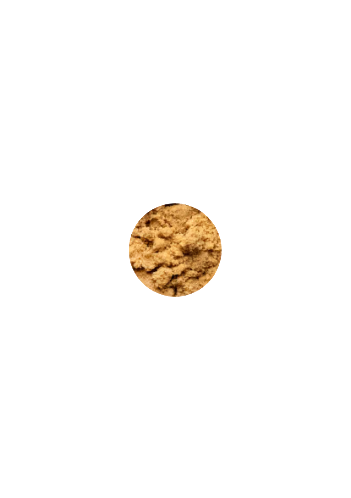
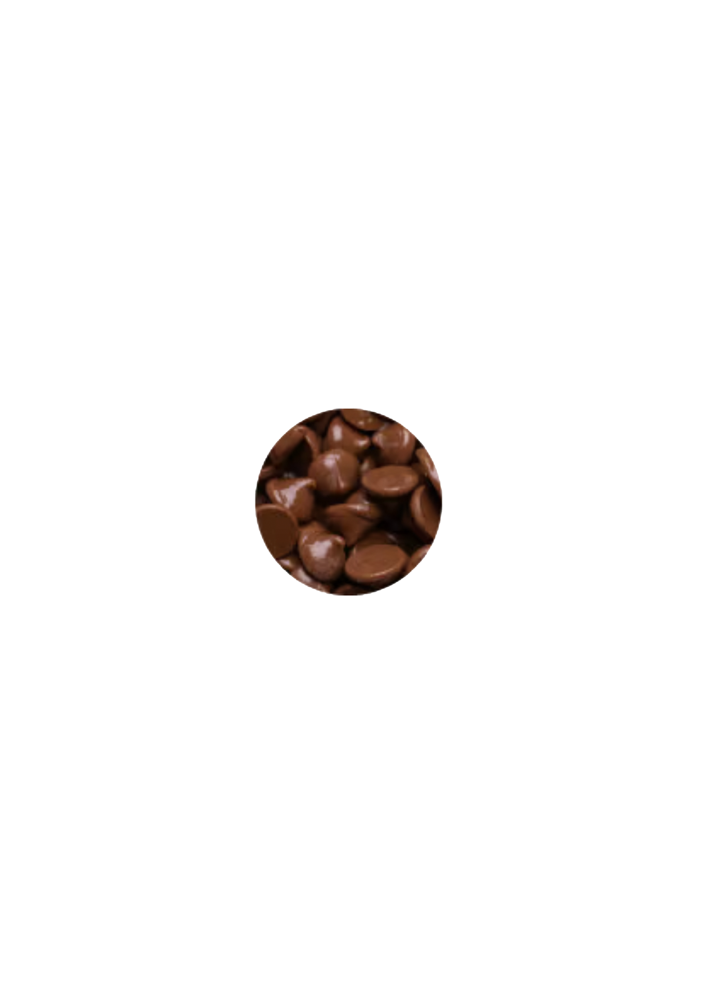
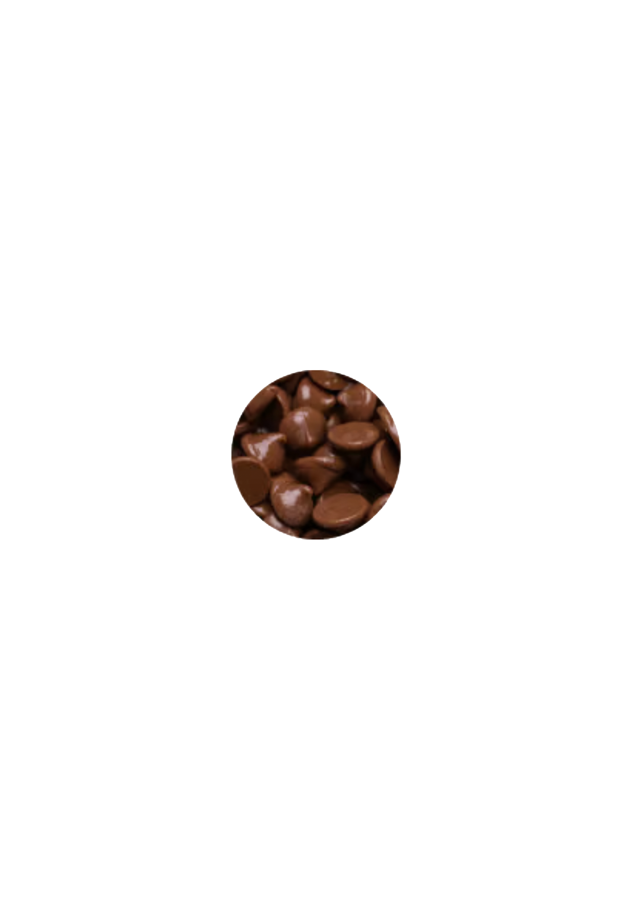

Served Warm
Milk Chocolate Chip Cookie
The classic—you cant go wrong. Thick, soft, and packed with milk chocolate chips.
★★★★★ 4.58 avg rating | 770,515 reviews

Served Warm
The classic—you cant go wrong. Thick, soft, and packed with milk chocolate chips.
★★★★★ 4.58 avg rating | 770,515 reviews
Based on the highest number of upvotes
Simple. Elegant. Classic. This cookie is a staple in any cookie lover's top 10!
literally always immaculate. ESPECIALLY WHEN IT'S WARM OH MY
Cant go wrong with a classic chocolate chip cookie
Tried this cookie? Download the Crumbl App to write a review!
A symphony of flour, sugar, butter, eggs, and chocolate, come together for our deliciously large gourmet desserts.
 



 

Chilled cookies should be consumed or refrigerated within 2 hours
Voedingsinformatie wordt hier weergegeven.
Allergeeninformatie wordt hier weergegeven.